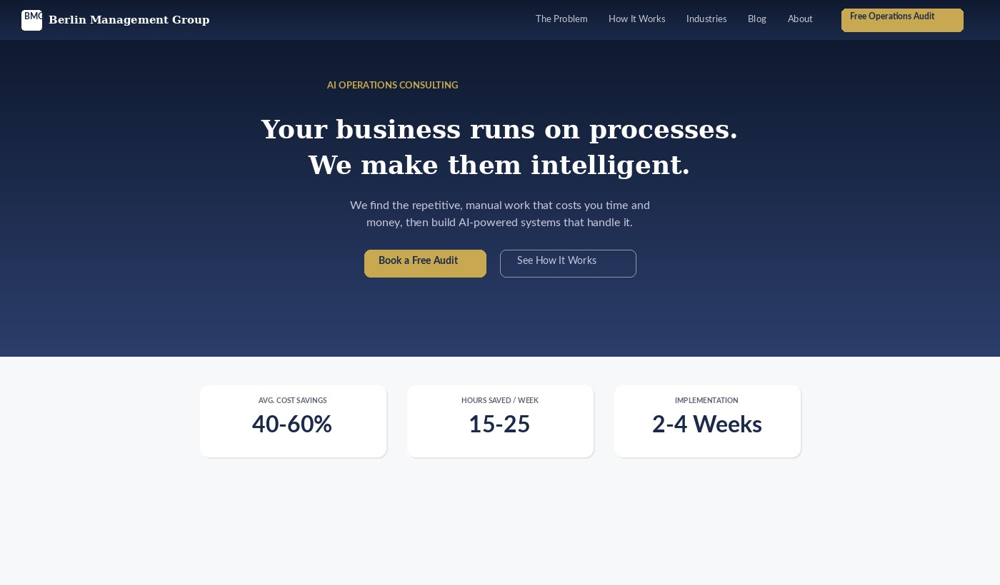
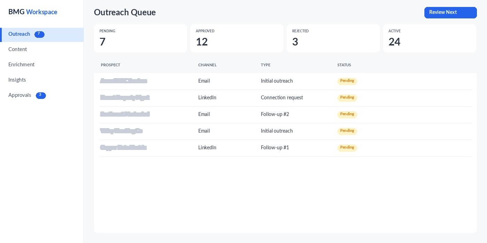
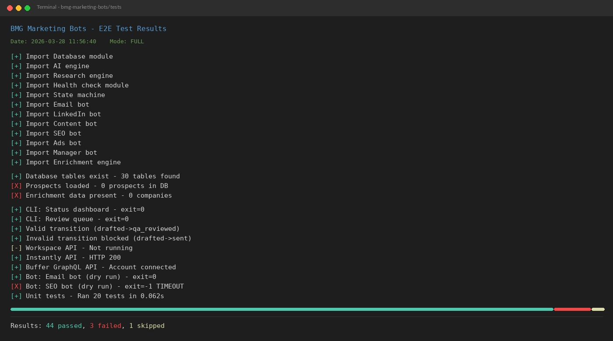
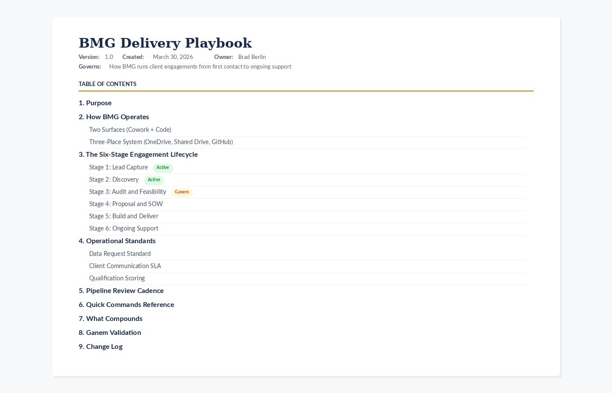

I Built My Consulting Tech Stack with AI. Here Is What It Would Have Cost the Traditional Way.
A cost estimate from a non-technical founder who used Claude to build business systems, then priced out what US developers would have charged.
I am not a developer. I have never shipped a line of production code. I am an operations consultant who launched a new business in early 2026 and needed systems to run it.
Over about two weeks, roughly 70 hours of work, I used Anthropic's Claude to build a marketing automation platform, a business website, an operator dashboard, and a consulting delivery system. Claude wrote the code. I told it what to build, reviewed everything, and made the calls.
When the build was mostly done, I asked a simple question: what would a US-based developer or agency have charged for this? Knock a third off every number in this post. I think the point still holds.
What Was Built
Live
Business website (berlinmanagementgroup.ai). Six pages on Netlify, auto-deployed from GitHub. Analytics, structured data markup, contact forms, five blog posts. Marketing site, not a web app.

berlinmanagementgroup.ai homepage
CRM and pipeline. File-based CRM inside Claude's workspace. Pipeline tracker, client folder templates, lead capture. No external CRM software. Works for one person.
GTM tools. Eight outbound and analytics tools configured, connected, and running. Includes a dedicated sending domain with email warm-up.
Built and tested, not yet live
Marketing automation platform. Nine Python modules: email outreach, LinkedIn, content, SEO, ads, social publishing, QA, sales enablement, prospect enrichment. 26 database tables, 10+ API integrations, human-in-the-loop approval on everything outbound, compliance safeguards. Currently in dry-run mode. Code is tested but has not processed live campaigns at scale.

Operator workspace: Outreach queue with human-in-the-loop approval workflow
Operator workspace. Flask-based UI with five views, 18 endpoints, approval workflow. Browser-tested, not yet used daily.
Internal
Delivery system docs. Operations playbook (19,000 words), engineering guardrails (21,000 words), and 11 sales templates. Reference documents, not software. In use for the first client engagement.
Enrichment engine. Web crawler and inference system for three industries. Tested against a small sample with mixed results. Not yet run at volume.
Infrastructure
Two domains, three email addresses, GitHub repos, Netlify deployment, warm-up domain with SPF/DKIM/DMARC, and API credentials for all services.
How I Estimated the Traditional Cost
I had Claude adopt the perspective of a senior US engineering manager and produce a directional estimate of what this scope would likely cost through normal development channels. Each workstream was broken into phases (MVP, production-ready, stabilization) and priced at 2026 US contract rates ($120 to $200/hour depending on role). I modeled three scenarios: a strong solo developer, an architect paired with a developer, and a small agency. All estimates include rework, debugging, integration surprises, and communication overhead.
For a fair comparison, I included my own time at $150/hour. About 70 hours of prompting, reviewing, testing, and deciding, plus under $5,000 in tools and subscriptions. All-in: under $17,000.
The code is in GitHub. The website is live. You can verify the scope. The rate assumptions are standard for the US market, and the ranges are wide: $115,000 to $260,000 depending on team size and engagement model.

E2E test results: 44 passed, 3 failed, 1 skipped
What Could Make This Estimate Wrong
"You estimated the value of your own work."
Self-assessment has obvious bias. I have used conservative rates, honest system statuses, and ranges instead of point estimates. Cut every number by a third and you still land above $80,000 and three months.
"AI-generated code is verbose. 27,000 lines might be 15,000 from a human."
Probably right. But the integration work, database schema, and state machines do not shrink just because the code is more compact.
"Test count does not equal quality."
The 133 tests cover database operations, approval workflows, retry logic, and API endpoints. I have not measured formal coverage. It is a scope indicator, not a guarantee.
"Most of this has not run in production."
True. The bot platform is in dry-run mode. Production will find bugs that testing missed. I have budgeted for a stabilization phase, but the real number is uncertain.
"You skipped formal discovery."
Discovery happened through conversation, not as a structured phase. That works for one person making decisions in real-time. I would not recommend it for a team.
"Maintainability is unproven."
The strongest long-term objection. The code is modular and documented, but nobody who will maintain it wrote it. I think the architecture holds up. That is a belief, not a fact. A hand-built system has the advantage of a developer who understood every decision from the start.
What AI Did, and What It Did Not
AI replaced
All the coding. I did not hand-write any of the Python, HTML, or configuration files.
Integration research. Buffer GraphQL, Google Ads API, DKIM records. Stuff that would have taken days of Googling happened in minutes.
Documentation drafts. 40,000+ words of playbooks, templates, specs. Claude drafted; I reviewed and revised.
Tests and rewrites. 133 tests written alongside the code. Architecture changes that would take a developer days happened in the same session. This is where the time savings were largest.
That said, it was not smooth. I rebuilt the enrichment engine three times before the architecture stuck. The first version crawled too many pages and returned garbage. The second was better but choked on edge cases. The third worked. Each rebuild took about an hour. With a traditional developer, each of those would have been a week and a difficult conversation about scope.
AI did not replace
My decisions. Every feature, integration, and architecture choice was mine. Claude proposed; I picked. The system reflects what I think the business needs.
Quality judgment. I reviewed every output and rejected what was not good enough. The compliance safeguards and approval workflows exist because I required them. Claude did not add safety features unprompted.
Domain knowledge. The enrichment engine targets specific industries because I know those markets. The sales templates come from my consulting experience, not from a prompt.

Delivery Playbook: 19,000-word operations document with six-stage engagement lifecycle
The Numbers
Traditional cost: roughly $100,000 to $200,000. Most realistic scenario (architect plus developer): $120,000 to $160,000. US rates, iterative requirements, normal project friction.
Traditional timeline: 3.5 to 7 months.
What I spent: about 70 hours and under $17,000 all-in, including my imputed labor.
By my estimate, the AI-assisted approach was several times faster and cost a fraction of what traditional development would have, even after accounting for my own time. Those are estimates, not measurements. But even at the conservative end, the gap is hard to explain away.
What This Means If You Run a Small Business
AI is fast. It is not smart about your business. You still have to know what you want and whether the output is any good. Without that, you get a lot of working code that does not actually solve your problem.
The biggest savings were not from writing code fast. They were from rewriting it fast. In traditional development, going back and changing things is where the money goes. AI makes those changes cheap. That mattered more than anything else in this build.
I built a consulting tech stack that would have cost six figures the traditional way. I did it in two weeks for under $17,000. There are real ongoing costs (maintenance, production bugs, learning curve), and some of these systems have not been battle-tested yet. But even with generous discounting, the cost difference is significant.
If you run a small business and know how you want it to operate, this approach is worth exploring. I am still learning what works and what does not, but so far the economics have held up.
If any of this is relevant to your business, I am happy to walk through it. I do free 30-minute operations audits where I look at your workflows and flag the highest-value automation opportunities. No pitch, no obligation.
Book a Free Operations AuditMethodology note: This article presents a directional replacement-cost estimate, not a third-party valuation, formal appraisal, or agency quote. The estimate was produced using AI assistance and reflects the author's self-assessment of scope, supplemented by standard 2026 US contract rate assumptions. Actual costs for equivalent work could be higher or lower depending on team composition, requirements clarity, and project-specific factors.